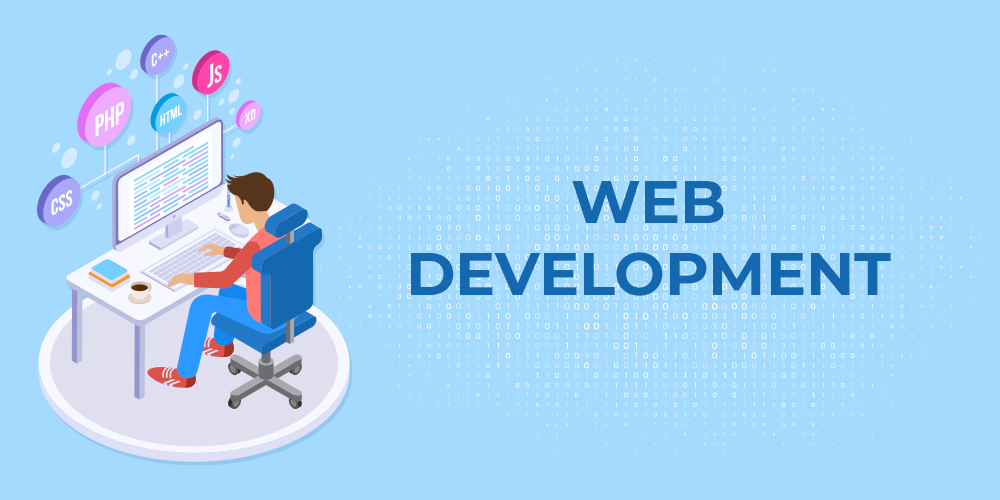

Our Courses
Explore the wide range of IT courses we offer. Every course has expert-led design that will equip you with practical skills and knowledge for the digital age.
Web Development
Learn to build modern, responsive websites and web applications.
Duration: 10 Weeks | Mode: Self-paced

Key Topics:
| 🌐 HTML, CSS, and JavaScript |
| 🖥️ Responsive Design and Accessibility |
| 🌐 Frontend Frameworks (e.g., React, Angular) |
| 🖥️ Backend Development (Node.js, Express) |
| 🌐 Databases and APIs |
Who Should Enroll:
Beginners eager to start a web development career or professionals looking to enhance their web development skills.
Outcome:
By the end of the course, you'll be able to build and deploy fully functional websites and web applications that are responsive and well-designed.
Cybersecurity
Understand security fundamentals and protect systems from cyber threats.
Duration: 15 Weeks | Mode: Instructor-led
Key Topics:
| 🔒 Network Security Basics |
| 🛡️ Threat Detection and Incident Response |
| 🔒 Encryption and Cryptography |
| 🛡️ Penetration Testing |
| 🔒 Security Compliance and Best Practices |
Who Should Enroll:
IT professionals seeking to advance their security knowledge, or anyone interested in safeguarding digital assets.
Outcome:
Gain hands-on experience in identifying vulnerabilities and implementing robust security measures.
Data Science
Dive into data analysis, machine learning, and AI concepts.
Duration: 20 Weeks | Mode: Self-paced
Key Topics:
| 📈 Data Cleaning and Preprocessing |
| 📊 Statistical Analysis |
| 📈 Machine Learning Algorithms |
| 📊 Data Visualization with Python and R |
| 📈 Real-world Project Implementation |
Who Should Enroll:
Individuals looking to enter the data science field or professionals aiming to boost their analytical skills.
Outcome:
Acquire the skills to analyze complex datasets, build predictive models, and derive actionable insights.